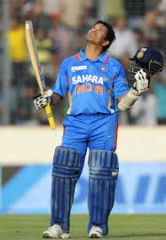

Sachin Tendulkar
Role: Batsman
Bio: Regarded as one of the greatest batsmen of all time, Sachin Tendulkar holds numerous records, including the most runs in international cricket.
Career Stats
| Format | Matches | Innings | Not Outs | Runs | High Score | Average | Balls Faced | Strike Rate | 100s | 50s | Fours | Sixes |
|---|---|---|---|---|---|---|---|---|---|---|---|---|
| Test | 463 | 664 | 41 | 15921 | 248* | 53.8 | 29258 | 51.0 | 51 | 68 | 2016 | 69 |
| ODI | 463 | 452 | 41 | 18426 | 200* | 44.8 | 24547 | 86.2 | 49 | 96 | 2016 | 264 |
| T20I | 1 | 1 | 0 | 10 | 10 | 10.0 | 15 | 66.7 | 0 | 0 | 0 | 0 |
Memorable Moments

Sachin's 200* against South Africa in 2010 was the first double century in ODI history.
He became the first player to score 100 international centuries, a milestone that remains unmatched.